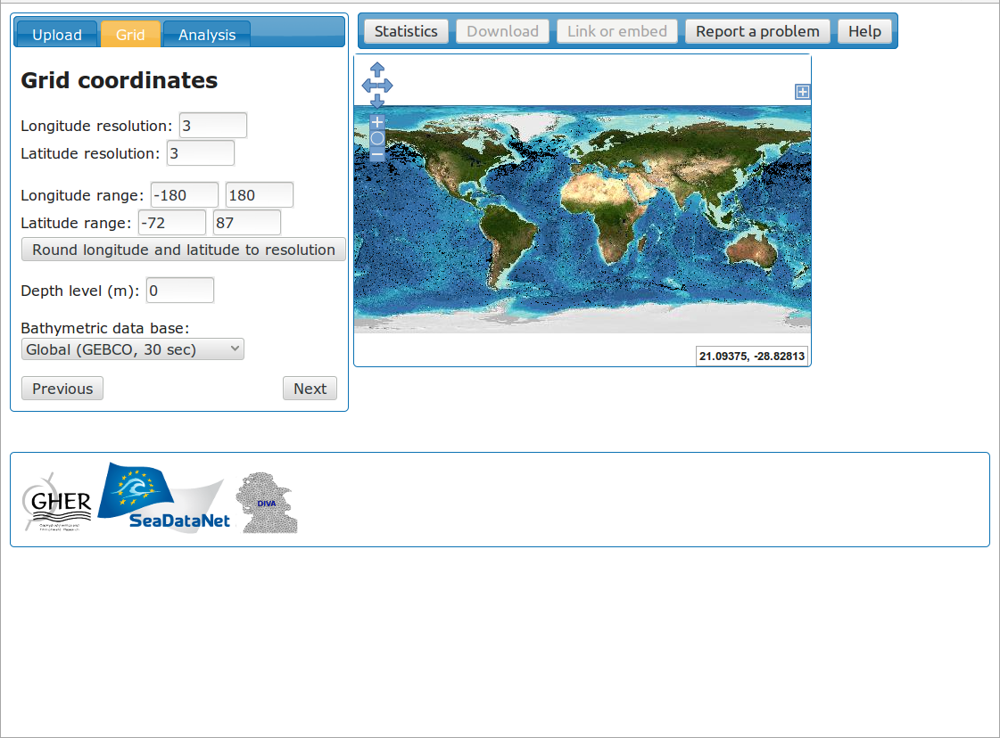
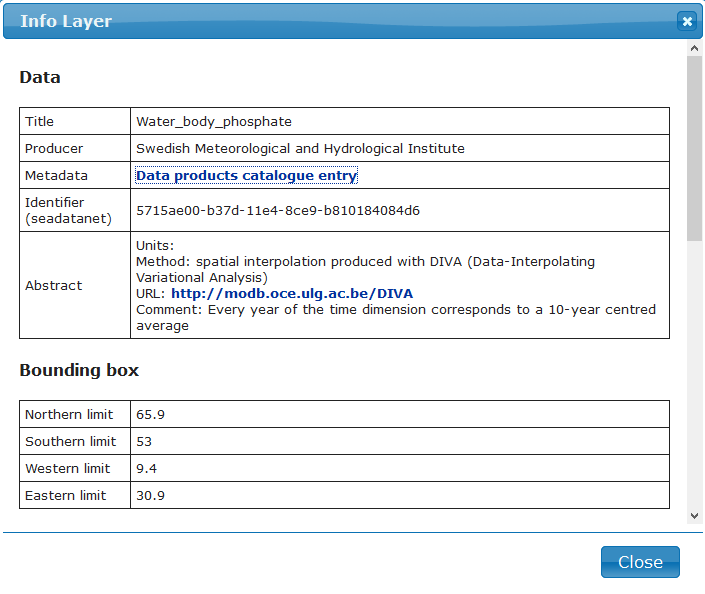

class: center, middle # Diva-on-web and OceanBrowser Alexander Barth¹, Sylvain Watelet¹, Charles Troupin², Jean-Marie Beckers¹ ¹GHER, University of Liège, Belgium ²SOCIB, Spain  --- # Diva characteristics * Diva is written in Fortran (for the computation) and * Shell Scripts (for managing files, ...) * Requires a UNIX-like environment * Uses text files to specify parameters and to activate some options * Location of the observations and their values are also specified as text files * Output in NetCDF * Diva is distributed as source code and binaries (Linux and Cygwin/Windows) --- # Command-line interface * Similar to other high-performance code (such as ocean models) and familiar to those users * Allows batch-processing * Easily ported to clusters → but difficult for new users unfamiliar with the command line --- # Software components of diva-on-web * All software components are open source * Server * Python (calling Diva and implementing a Web Map Server) * Matplotlib and basemap for graphics * nginx webserver as proxy * Client * Openlayers (WMS client) * Custom Javascript code <!-- Exchanges between client and server --> --- # Data upload * No registration required * Data uploaded as text file * For example (longitue, latitude, value): ``` 29.76 45.15 16.14 29.76 45.15 16.34 ``` * http://ec.oceanbrowser.net/emodnet/diva.html --- # Analysis grid  * Sample data file: a week of ARGO temperature data * The location of observations is shown * Choice of the output grid --- # Parameters * Parameters of the analysis * correlation length * signal-to-noise ratio * Velocity for advection constrain * NetCDF file with the u- and v- velocity component * Regular grid --- # Correlation length * Under some assumptions, correlation length can be derived from the data (divafit) --- # Analysis * Analysis is shown as a layer in the Openlayers window * The allowed error variance can be changed to hide areas with few observations --- # Layer selection * Zooming and panning * Available layers: * Location of obs. * Analysis * Error mask * Mesh * The size of the mesh is related to the correlation length (very large here) --- # Download the results * Results can be downloaded as NetCDF files, Matlab/Octave files and KML files (for e.g. Google Earth) --- # Link or embed results * Direct link to the analysis * Embed the results on your web pages * Maps are still interactive --- # Summary * Diva-on-web is a web interface for Data-Interpolating Variational Analysis (Diva) * Should be easy to use * Allow potential users to try Diva before installing * Different options to download the analysis are available * It is also possible to share the results * http://ec.oceanbrowser.net/emodnet/diva.html --- # What is OceanBrowser? * Web-interface to __visualize gridded__ data sets in NetCDF * Horizontal and vertical sections * Scalar and vector fields * Addresses: * __SeaDataNet__: http://sdn.oceanbrowser.net/web-vis/ * __EMODNET Chemistry__: http://ec.oceanbrowser.net/emodnet/ In those projects it is used to visualize gridded data sets generated by the tool DIVA (Data-Interpolating Variational Analysis) --- # Layer selection <img style="float:right" src="Fig/OceanBrowser_select_data_product.png" width="400"> * Simple directory __structure on the server__ is mapped into a hierarchical list of layers * NetCDF files can be added on-the-fly (without a server restart) * __Virtual sub-folder__ can be added to show some NetCDF variables more/less prominently For DIVA field: * 1st level: analysis masked by an error threshold * 2nd level: Full field available under “Additional fields” --- # Horizontal section The right panel controls the current layer: * __Select depth and time__ * Plot style * Metadata * Download of data product --- # Vertical section <video style="float:right" width="500" controls="controls" autoplay="autoplay" > <source src="Fig/OceanBrowserVerticalSection.webm" type="video/webm"> <source src="Fig/OceanBrowserVerticalSection.mp4" type="video/mp4"> </video> * Vertical section can be drawn with the mouse * Data product will be extracted along this section (x-axis: distance from starting point and y-axis depth) * Section coordinates can be saved (to visualize two parameters along exactly the same section) --- # Vertical section <img style="float: right" src="Fig/Vertical_section.svg" width="500"> * The path of a vertical section can be generated automatically by: * fixed distance from coast * or fixed ocean depth --- # Available styles <img style="float: right" src="Fig/oceanbrowser_plotting_style.svg" width="400"> * Styles * Interpolated * Filled contours * Simple contours * Colorbar options * Colormap * Range --- # Download a data product <img style="float: right" src="Fig/OceanBrowser_download.png" width="500"> * Download icon (green arrow) * Data available as NetCDF or OPeNDAP * Image / Animation export --- # Export animations <video style="float:right" width="500" controls="controls" autoplay="autoplay" > <source src="Fig/phosphate_baltic_shadedrelief.webm" type="video/webm"> <source src="Fig/phosphate_baltic_shadedrelief.mp4" type="video/mp4"> </video> * Winter distribution of phosphate (produced by SMHI) * Centred 10-year average of all winter months * OceanBrowser: export of animation by choosing MP4 or WebM animation. --- # More information  * Info about the NetCDF file * NetCDF Comments attribute * Units * Bounding box * Time range * Depth range * Link to Sextant catalog from Ifremer --- # Observations * Web Feature/ Processing Service by Deltares * Data location (within depth and time range) * Color shows the number of observations * Time series and profile plots --- # Installation * The hard way: install 13 packages, configure Apache and OceanBrowser and set file permissions * The easy way: ```bash docker run -p 8080:80 --name my-oceanbrowser-container \ -v /some/netcdf/files/:/var/www/data:ro abarth/oceanbrowser ``` * Docker autamatically downloads and runs OceanBrowser * OceanBrowser is available at port 8080 on localhost and servers files in the directory `/some/netcdf/files/` * Configuration using environement variables (public URL, name,...) * More info at the docker http://registry.hub.docker.com and search for OceanBrowser --- # Summary * OceanBrowser allows the visualization of gridded data sets: * along a __horizontal section__ (at given time and depth) * along a __vertical section__ (e.g. at a fixed distance from coast) * Download options: * Full __NetCDF file__ * Subset via __OPeNDAP__ * __Image__ export (PNG, EPS, SVG, ...) * __Animation__ export (webm, mp4) * Installation simplified using docker * __Open source__ (AGPL) and based on python and matplotlib * Using on OGC standards (WMS, WFS and NetCDF)